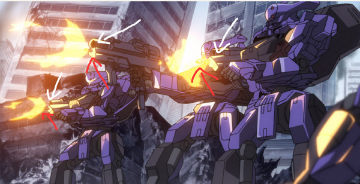
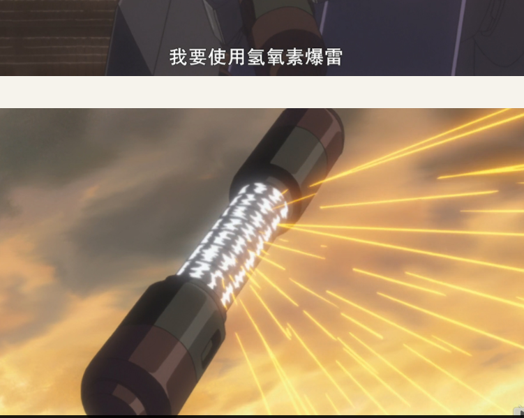
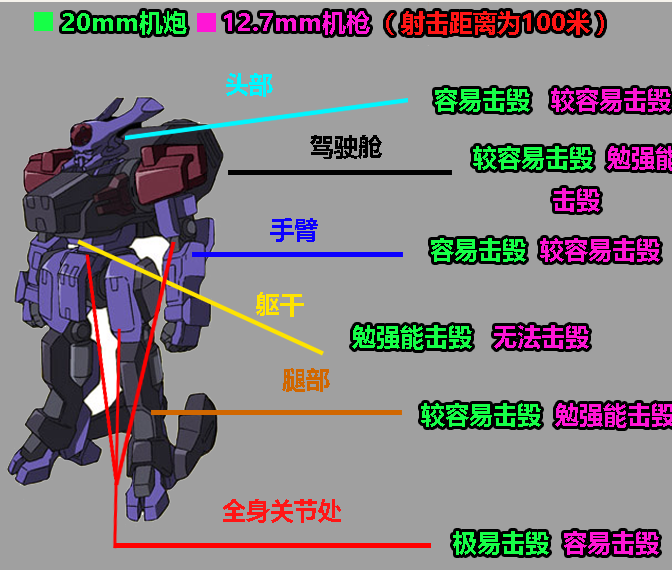

布国设定【1】KMF 的性能，武器
这里的大部分设定取自隔壁《CodeGeass铁幕·铁甲》的作者战争艺术022的原作考证。在征得其本人同意后，我将以他的设定为原型的一些关于布国的设定搬运修改来。具体考证过程不赘述，只取结论，有兴趣看考证过程的可以搜书名，点进他的设定集看。
之所以有修改，是因为动画毕竟只是动画，很多时候编剧只考虑了画面需求，对其内在逻辑并没有进行过考虑，导致会出现自相矛盾的地方。我只取其中对我有利的一方，另一方面视作不存在。例：动画中机甲的内视镜头里，会出现火控平台上瞄准的聚焦，但是实际上机甲的武器并不和机甲连接，除非机甲的全身都是精密仪器，装有感应装置，感应机甲拿着什么武器，武器正对准什么位置。但这是不现实的。
另外，那本书的作者对军事懂很多，而我的懂得很少，所以我必须把动画的科技军事水平压制到我能理解的范畴内，为此，一定程度上要削弱布国军事专业技能（并且随剧情需要产生波动性）。但作为补偿，我会让布国在行政上有一个不那么大河内的脑子。
下面的口是机枪，上面的口发射枪榴弹
①机枪的威力很一般，但能撕碎机甲的装甲，威力应该和20mm机炮大致相当，但射程很近，具体有多近看我到时候的剧情需要；
②枪榴弹用来对付装甲车辆，动画表现还行，可以破坏动画里坦克的侧面装甲和突击炮的正面装甲；
③机甲还可以搭载便携式榴弹炮，杀伤力不明，动画里没有直接表现。比枪榴弹强，比155弱，中间区间可以按照需求自由发挥；
④钩锁。有效杀伤半径应该在三十米以内，威力看需求。正面破坏装甲车不行，侧面打车门吧驾驶员副驾驶员干掉应该不成问题。
⑥
这东西放在机甲的腰侧，我没有百度到青羊苏暴雷是个什么东西。从光线效果来看，应该是步兵武器级别的。就当是朝四面八方打的重机枪吧，给机甲压制步兵使用
⑦ 袖剑
机甲肉搏的时候从胳膊里弹出使用，动画R1里，列装机甲使用过的唯一一个机体本身携带的武器。（枪炮都不能放在身上的，只能用双手抓着）
⑧ 行进速度 公路极限小于100km/h 越野小于70km/h
⑨ 续航能力 R1所有机甲续航能力在4小时以内
⑩ 装甲防护能力：如图
